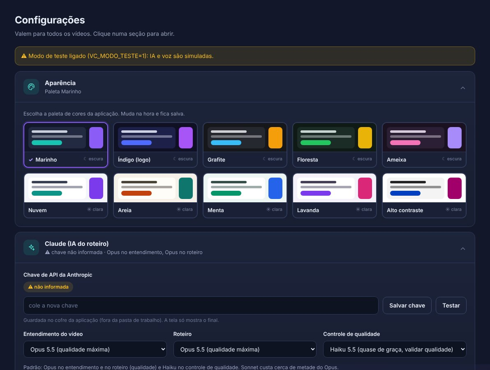
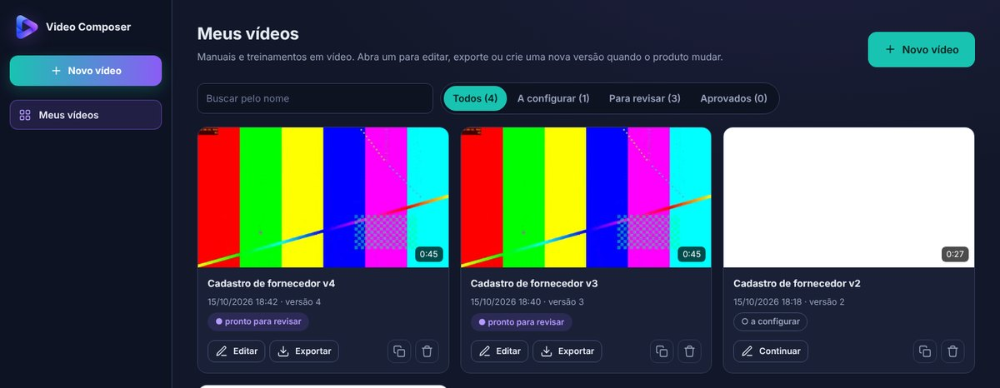
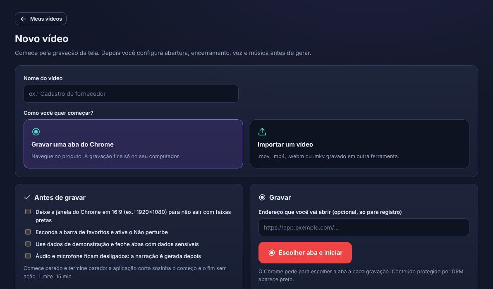
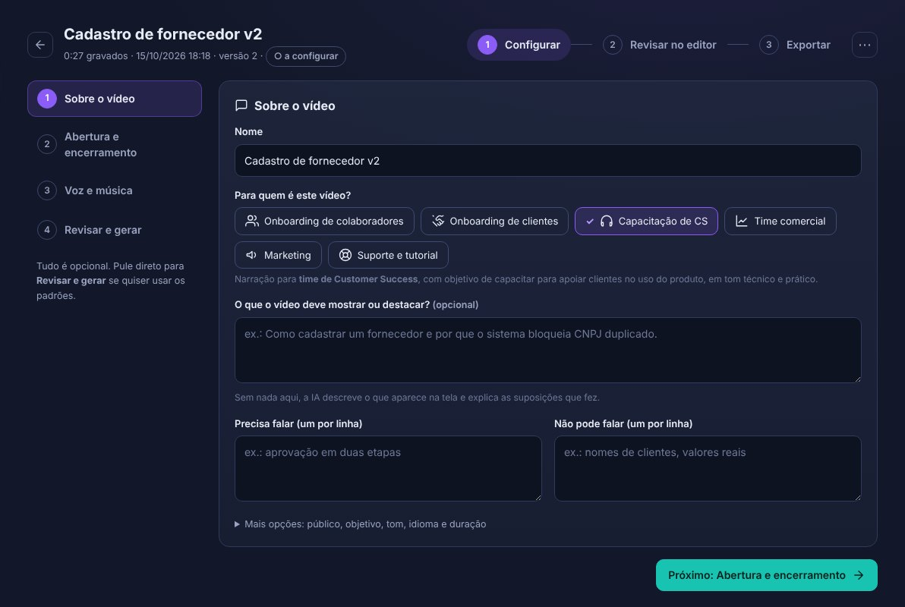
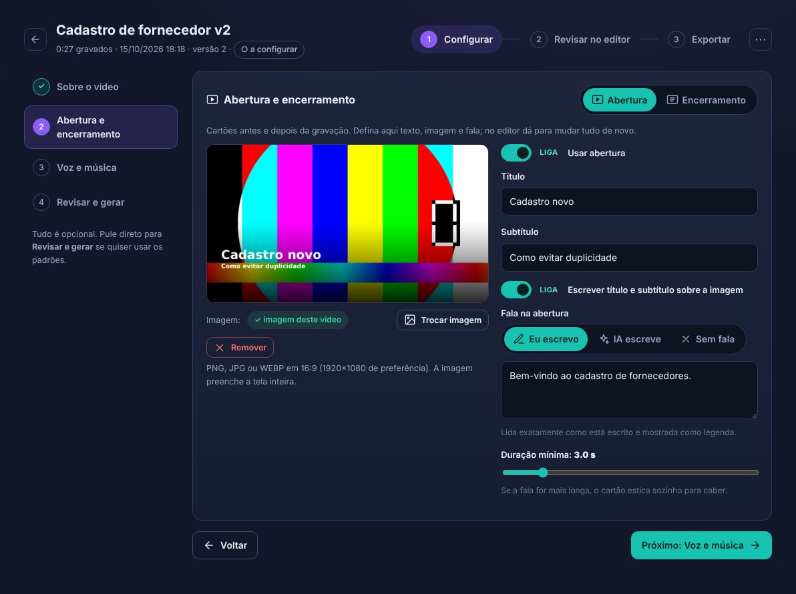
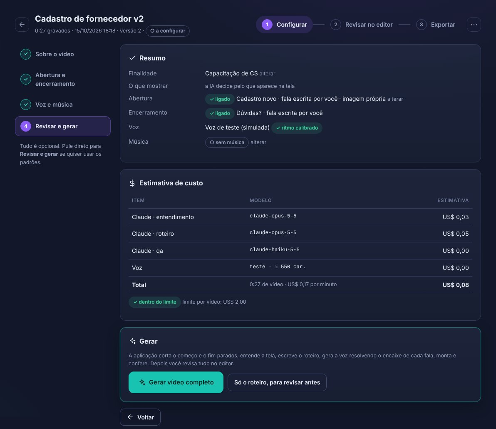
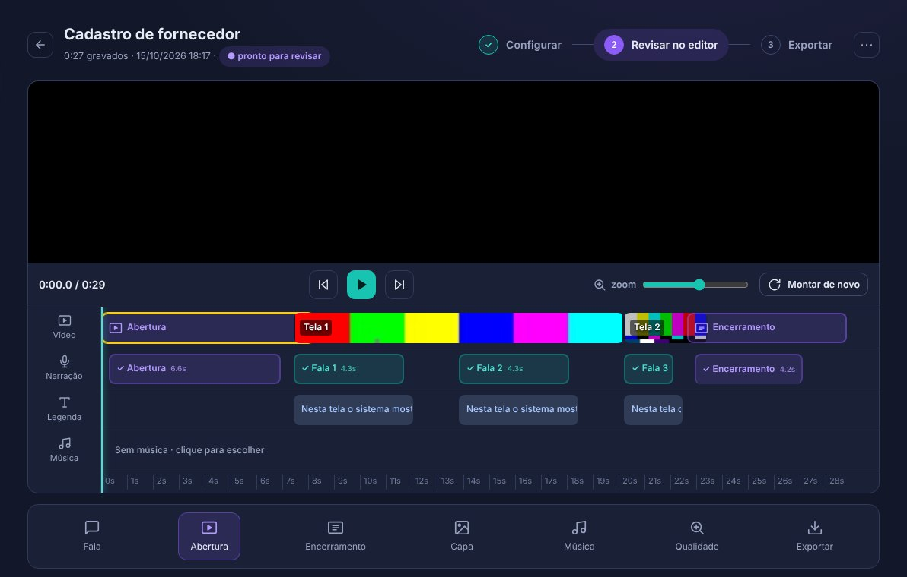
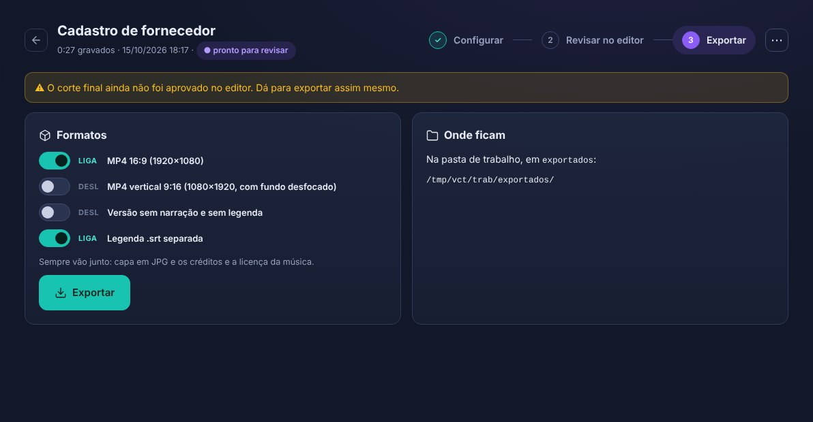

Transforme a gravação de uma aba do Chrome em um vídeo narrado, com legendas, música, capa, abertura e encerramento. Feito para manuais de produto, onboarding de colaboradores e clientes e capacitação de CS, time comercial e marketing.
Conteúdo
Antes de começar
Instalar
Abrir e parar
Primeira configuração
Criar o primeiro vídeo
Configurar o vídeo
Revisar no editor
Exportar
Atualizar um vídeo (nova versão)
Dicas para boas gravações
Atualizar a aplicação
Desinstalar
Problemas comuns
Versão 0.4.1 · As telas deste tutorial usam um vídeo de teste.
1Antes de começar
Item
O que precisa
Windows
Windows 10 (22H2) ou Windows 11, 64 bits
Memória e disco
8 GB de RAM (16 GB recomendado) e pelo menos 10 GB livres
Docker Desktop
Roda a aplicação. O instalador oferece instalar se não tiver. Usa o WSL 2 do Windows e pode pedir para reiniciar o computador uma vez
Google Chrome
Necessário para gravar abas
Chave da Anthropic
Obrigatória para gerar vídeos: é a IA que entende a tela e escreve o roteiro. Crie em console.anthropic.com
Chave da ElevenLabs
Opcional: voz de alta qualidade e música gerada por IA. Sem ela, use a voz offline Kokoro (gratuita, tem voz feminina)
Internet
Para instalar, para a IA e a voz. A gravação e a montagem do vídeo rodam no seu computador
AtençãoSe a sua empresa controla o computador, pode ser preciso pedir à TI para instalar o Docker Desktop e liberar a virtualização.
PrivacidadePara escrever o roteiro, quadros da gravação vão para a API da Anthropic. Grave com dados de demonstração sempre que possível. Vídeos e arquivos ficam no seu computador; as chaves ficam num cofre da aplicação, fora da pasta de vídeos.
2Instalar
Extraia o arquivo. Clique com o botão direito em VideoComposer-Windows.zip e escolha Extrair tudo. Não rode de dentro do .zip.
Rode o instalador. Abra a pasta extraída e dê dois cliques em Instalar.bat. Se aparecer "O Windows protegeu o computador", clique em Mais informações e depois em Executar assim mesmo.
Docker Desktop. Se não estiver instalado, responda S para instalar. Ao final, reinicie o computador se o Windows pedir, abra o Docker Desktop uma vez, aceite os termos e rode o instalador de novo pelo Menu Iniciar, em Instalar Video Composer.
Pasta dos vídeos. Tecle 1 para usar Vídeos\VideoComposer (recomendado) ou 2 para escolher outra. Evite pastas do OneDrive: vídeos são grandes.
Aguarde a construção. Na primeira vez leva de 5 a 15 minutos. As próximas aberturas levam segundos.
Chaves. Cole a chave da Anthropic e, se tiver, a da ElevenLabs. O que você digita não aparece na tela. Pode pular e informar depois em Configurações.
Atalhos. O instalador cria a pasta Video Composer no Menu Iniciar e, se você quiser, um atalho na Área de Trabalho. A aplicação também aparece em Configurações do Windows > Aplicativos > Aplicativos instalados.
ProntoO Chrome abre em http://localhost:8898. A aplicação fica instalada em %LOCALAPPDATA%\Programs\VideoComposer. A pasta extraída pode ser apagada.
3Abrir e parar
Ação
Como
Abrir
Menu Iniciar > Video Composer (ou o atalho da Área de Trabalho). Abre o Docker se precisar e depois o Chrome
Usar
No Chrome, em http://localhost:8898. Pode salvar nos favoritos
Parar
Menu Iniciar > Video Composer > Parar Video Composer. Libera memória. Nada é apagado
DicaUse sempre o endereço localhost. O Chrome só permite gravar abas a partir dele.
4Primeira configuração
Clique em Configurações, no rodapé do menu à esquerda. Cada seção abre e fecha com um clique e mostra um resumo quando fechada.

Configurações: seções que abrem e fecham.
Seção
O que fazer
Aparência
Escolha uma das 10 paletas: 5 escuras e 5 claras. Muda na hora
Claude
Confira se a chave está definida e clique em Testar. Os modelos padrão já são os recomendados
Voz
Escolha o motor na lista: ElevenLabs (melhor qualidade, carregue a lista e escolha uma voz pt-BR) ou Kokoro (offline e gratuito; Dora é feminina). Clique em Ouvir amostra
Pasta de trabalho
Mostra onde ficam os vídeos. Para mudar, informe o novo caminho, salve e depois pare e abra a aplicação
Marca
Imagens padrão de abertura e encerramento, logotipo, cores e fonte das legendas
5Criar o primeiro vídeo
A tela inicial é Meus vídeos. Clique em + Novo vídeo.

Meus vídeos: busca, filtros e ações de cada vídeo (Editar, Exportar, Nova versão e Apagar).

Novo vídeo: gravar uma aba do Chrome ou importar um vídeo pronto.
Gravar uma aba
Dê um nome ao vídeo (opcional) e escolha Gravar uma aba do Chrome.
Clique em Escolher aba e iniciar. O Chrome pergunta qual aba gravar: escolha a do produto e clique em Compartilhar.
Depois de 3 segundos, navegue como faria numa demonstração. Use Pausar se precisar.
Volte à aba do Video Composer e clique em Parar e salvar. O assistente de configuração abre na hora.
Importar um vídeo
Escolha Importar um vídeo e arraste o arquivo (.mp4, .mov, .webm, .mkv). Ele é comprimido em segundo plano enquanto você configura.
6Configurar o vídeo
O assistente tem 4 passos. Tudo é opcional: se quiser, vá direto para Revisar e gerar.
Passo 1 · Sobre o vídeo

Para quem é este vídeo? Um clique ajusta público, objetivo e tom: Onboarding de colaboradores, Onboarding de clientes, Capacitação de CS, Time comercial, Marketing ou Suporte e tutorial.
O que mostrar, Precisa falar e Não pode falar (ex.: nomes de clientes, valores reais).
Passo 2 · Abertura e encerramento

Alterne entre Abertura e Encerramento no topo. Ligue ou desligue cada um.
Título e subtítulo; Enviar imagem (16:9, de preferência 1920×1080) ou use a imagem padrão da marca.
Fala:Eu escrevo (lida exatamente como escrita), IA escreve (só na abertura) ou Sem fala. O cartão estica sozinho para caber a fala.
A prévia atualiza e tudo salva sozinho.
Passo 3 · Voz e música
Escolha o motor e a voz e clique em Ouvir amostra.
Música: Gerar com IA (Eleven Music, a mais segura para uso comercial), Minhas faixas ou Sem música.
Passo 4 · Revisar e gerar

Confira o resumo e a estimativa de custo e clique em Gerar vídeo completo. A aplicação faz sozinha:
corta o começo e o fim parados da gravação;
entende cada tela e escreve o roteiro no tamanho certo para cada cena;
gera a voz e encaixa cada fala no tempo da tela;
monta o vídeo com legendas, música, abertura, encerramento e capa, e confere a qualidade.
DicaPode sair da tela durante a geração. O progresso aparece no canto inferior direito e o editor abre sozinho quando terminar.
7Revisar no editor

Editor: player, trilhas e ferramentas.
Trilhas: Vídeo, Narração, Legenda e Música, todas no tempo do vídeo final.
Ícones das falas: ✓ ritmo natural · ⚡ acelerada · ✂ encurtada pela IA · ⚠ não coube.
Clique para editar: numa fala para mudar o texto; no bloco da abertura ou do encerramento para mudar texto, imagem e fala; na trilha Música para trocar a faixa.
Depois de editar, clique em Aplicar no vídeo. A aplicação refaz só o que mudou.
Capa: automática, um quadro do vídeo ou uma imagem sua.
O botão de três pontos, no canto direito do cabeçalho, abre as telas avançadas: Roteiro completo, Voz e encaixe das falas, Cortes e marcadores.
Quando estiver bom, clique em Aprovar e exportar.
8Exportar

Formatos: MP4 16:9, MP4 vertical 9:16, versão sem narração e legenda .srt separada.
Sempre vão junto a capa em JPG e os créditos e a licença da música.
Os arquivos ficam em Vídeos\VideoComposer\exportados\<nome do vídeo>.
9Atualizar um vídeo (nova versão)
O produto mudou? Em Meus vídeos, clique no ícone de Nova versão do vídeo e grave de novo. A versão nova herda finalidade, textos, abertura, encerramento, imagens e capa, e recebe o nome "v2", "v3"...
10Dicas para boas gravações
Deixe a janela do Chrome em 16:9 (de preferência 1920×1080) para não sair com faixas pretas.
Esconda a barra de favoritos (Ctrl + Shift + B) e ative o Não incomodar do Windows.
Use dados de demonstração. Feche abas com dados sensíveis.
Comece e termine parado: a aplicação corta sozinha os trechos sem ação.
Navegue sem pressa: pause um instante em cada tela importante para a narração caber.
11Atualizar a aplicação
Recebeu uma versão nova? Extraia o novo .zip e rode Instalar.bat de novo. A instalação é atualizada; vídeos, chaves e configurações são mantidos.
12Desinstalar
Use um dos caminhos:
Configurações do Windows > Aplicativos > Aplicativos instalados > Video Composer > Desinstalar; ou
Menu Iniciar > Video Composer > Desinstalar Video Composer.
O desinstalador:
Remove o contêiner e a imagem do Docker. Pergunta se apaga também as chaves de API e as vozes offline.
Pergunta se apaga a pasta de vídeos. Só apaga se você digitar APAGAR; se não, os vídeos ficam.
Remove os atalhos e o registro em Aplicativos instalados.
Apaga a pasta da aplicação ao fechar a janela.
DockerO Docker Desktop continua instalado, porque outros programas podem usá-lo. Para removê-lo: Configurações do Windows > Aplicativos > Docker Desktop > Desinstalar.
13Problemas comuns
Sintoma
O que fazer
"O Windows protegeu o computador"
Mais informações > Executar assim mesmo
Instalar.bat diz que não encontrou os arquivos
Você abriu de dentro do .zip. Use Extrair tudo antes
Docker pede WSL 2 ou virtualização
Reinicie o computador. Se continuar, ative a virtualização na BIOS ou peça à TI
"O Docker Desktop não respondeu"
Abra o Docker Desktop pelo Menu Iniciar, espere o status ficar verde (Engine running) e tente de novo
"Este navegador não permite capturar abas"
Use o Chrome em http://localhost:8898
Gravação com faixas pretas
A janela não estava em 16:9. Ajuste o tamanho antes de gravar
Parte da tela aparece preta
A página usa proteção de conteúdo (DRM) e não pode ser gravada
Erro de chave (401 ou 403)
Configurações > Claude ou Voz > cole a chave de novo e clique em Testar
Erro ao gerar música
Confira a chave da ElevenLabs e se o plano dá acesso à música
Trocou a pasta de trabalho e nada mudou
Pare e abra a aplicação. Vídeos da pasta antiga não são movidos
Erro durante a montagem
Anote a primeira linha da mensagem de erro e envie para o suporte
Diagnóstico avançado
No Explorador de Arquivos, abra %LOCALAPPDATA%\Programs\VideoComposer, clique na barra de endereço, digite powershell e tecle Enter. Depois rode docker compose logs --tail 200 para ver o que aconteceu.